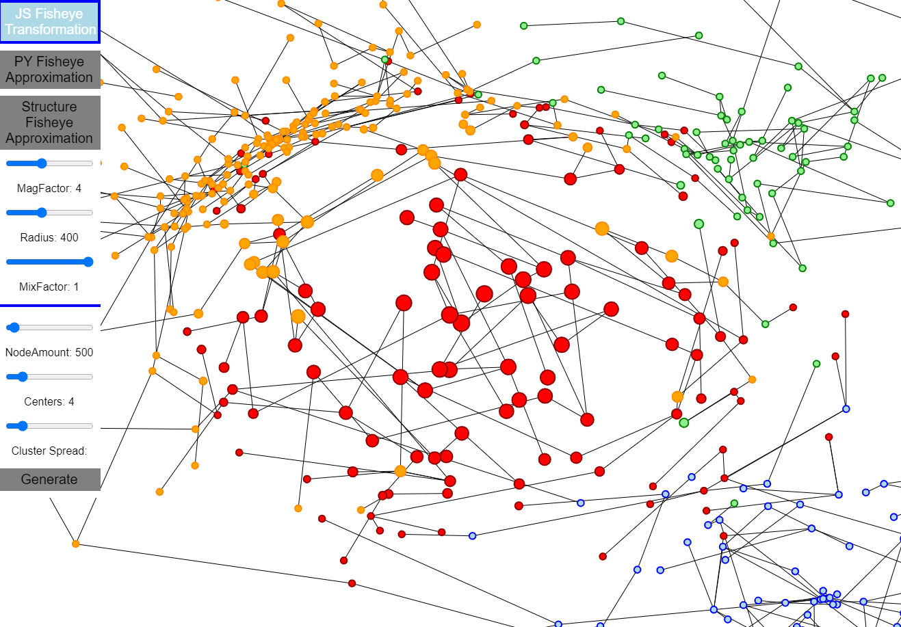

Welcome to Structural fish eye approximation’s documentation!¶
How to install:
1. Make sure you have python 3.x installed
2. Go to project /src/
3. run command "pip install requirements.txt" (to install numpy)
4. Make sure nodejs/npm are installed
5. run command "npm install"
To run the application run "npm run start" and then open up your browser at http://localhost:3000
How to use:
Js Fisheye Transformation:
If this option is selected then, when the network is clicked or dragged a graphical fisheye distortion is performed directly in javascript code. Py Fisheye Approximation:
If this option is selected and the network is clicked, then a network optimization (custom gradient descent) is performed by the server (with python code), with the set goal of approximating a graphical fisheye distortionStructure Fisheye Approximation:
If this option is selected and the network is clicked, then a network optimization (custom gradient descent) is performed by the server (with python code).The goal here is approximating a graphical fisheye, while following several contraints (non-overlapping nodes in focal area, edge orientations still the same as in original layout, edge crossings maximization) Parameters:
- MagFactor: The degree of magnification of the fisheye views
- Radius: The radius of the fisheye focal boundary region
- Mixfactor: Interpolation with the original Layout, when distance of node to focalPoint exceeds radius (the boundary)
Generate:
In the generate section a new Network can be created with a clusterCenterAmount slider and a NodeCount sliderCode Architecture (JavaScript, NodeJs, Python):
JavaScript:
src/public/js/
fisheye.js - Client and JavaScript drawing:
Sends/receives messages to/from the python process running on the server side. Manages the node and edge (network) drawing process. Handles smooth user interaction and view interaction. Provides settings for fisheye zoom customization.NodeJs (TypeScript):
src/app.ts, src/modules/
app.ts - NodeJs Communication:
Serving the resources required for running to JavaScript based webpage displaying the network. Further manages the python subprocess which does the netowork data manipulations. Also acts as a relay between the JavaScript client and the python subprocess, by using sockets for client communication and stdin writing, stdout reading for python communication.Python:
src/python/*
pythoncommunicator.py - Data manipulation:
Acts as entry point from nodeJs to the python data processing. Manages and handles the python component and defines data processing reactions to client messages.networkoptimizer.py - Network optimization (via gradient descent)
Performs a custom implementation of gradient descent on the network to match some fisheye distortion properties while, following other layout constraints aimed to improve the view structure of the network . Done by the following process:1. Move last node positions by gradient * velocity value
2. Calculate node loss at the new positions
3. Update Velocity and gradient direction based on if loss increased or decreased
4. Set last positions to updated positions
5. Repeat until optimized
Python Documentation: